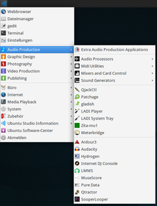
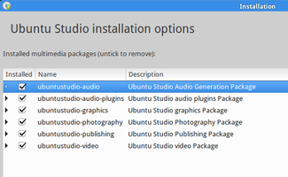

Ubuntu Studio
Dieser Artikel wurde für die folgenden Ubuntu-Versionen getestet:
Ubuntu 16.04 Xenial Xerus
Ubuntu 14.04 Trusty Tahr
Zum Verständnis dieses Artikels sind folgende Seiten hilfreich:
 Ubuntu Studio
Ubuntu Studio  ermöglicht es, auf einfache Weise ein System für die Musik-, Video- und/oder Grafikproduktion einzurichten. Ubuntu Studio kann eigenständig installiert oder auf Basis eines bestehenden Ubuntu-Systems ergänzt werden. Dabei benutzt es als Oberfläche einen angepassten Xfce-Desktop und einen für Audioanwendungen modifizierten Echtzeitkernel.
ermöglicht es, auf einfache Weise ein System für die Musik-, Video- und/oder Grafikproduktion einzurichten. Ubuntu Studio kann eigenständig installiert oder auf Basis eines bestehenden Ubuntu-Systems ergänzt werden. Dabei benutzt es als Oberfläche einen angepassten Xfce-Desktop und einen für Audioanwendungen modifizierten Echtzeitkernel.
Die erste verfügbare Version wurde im Mai 2007 auf Basis von Ubuntu 7.04 veröffentlicht. Seit Ubuntu 7.10 ist Ubuntu Studio über die offiziellen Paketquellen verfügbar. Ubuntu Studio 14.04 und 16.04 sind LTS-Versionen, die drei Jahre (bis April 2017 bzw. 2019) unterstützt werden.
Installation¶
|  |
| Hauptmenü |
Neuinstallation¶
Ubuntu Studio ist als ca. 2,7 GiB großes ISO-Abbild auf der Downloadseite  verfügbar. Die Installationsroutine unterscheidet sich von anderen Ubuntu-Varianten nur durch eine zusätzliche Auswahlmöglichkeit von Multimediaprogrammen mittels Metapaketen. Mehr Details und eine bebilderte Anleitung sind z.B. im Artikel Xubuntu-Installation zu finden.
verfügbar. Die Installationsroutine unterscheidet sich von anderen Ubuntu-Varianten nur durch eine zusätzliche Auswahlmöglichkeit von Multimediaprogrammen mittels Metapaketen. Mehr Details und eine bebilderte Anleitung sind z.B. im Artikel Xubuntu-Installation zu finden.
Ergänzung eines bestehenden Systems¶
Grundsystem¶
Das folgende Paket installiert einen angepassten Xfce-Desktop mit eigenen Menüeinträgen für die verschiedenen Arbeitsbereiche. Er wird aber nicht zwingend benötigt, man kann auch einen beliebigen anderen Desktop verwenden.
ubuntustudio-desktop (universe)
 mit apturl
mit apturl
Paketliste zum Kopieren:
sudo apt-get install ubuntustudio-desktop
sudo aptitude install ubuntustudio-desktop
Das nächste Paket wird für die Audio-Variante von Ubuntu Studio, genauer gesagt zum störungsfreien Betrieb des Soundservers jack, zwingend benötigt. Es handelt sich dabei um einen Echtzeitkernel, der bei allen anderen Anwendungsfällen eher kontraproduktiv ist.
linux-lowlatency
mit apturl
Paketliste zum Kopieren:
sudo apt-get install linux-lowlatency
sudo aptitude install linux-lowlatency
Das dritte Paket nimmt neben einer Änderung der Xfce-Vorkonfiguration eine für Audiozwecke wichtige Anpassung vor. Es wird mit ubuntustudio-desktop automatisch installiert. Es wird für Grafik- und Videobearbeitung nicht zwingend benötigt.
ubuntustudio-default-settings (universe)
mit apturl
Paketliste zum Kopieren:
sudo apt-get install ubuntustudio-default-settings
sudo aptitude install ubuntustudio-default-settings
Experten-Info:
Dieses Paket ergänzt in der Datei /etc/security/limits.d/audio.conf die Zeile
@audio - rtprio 95
Dies ist für stabilen Betrieb mit niedrigen Latenzen nötig. Ist auf diese Weise kein stabiler Low-Latency-Betrieb möglich, finden sich weitere Hinweise in Tonstudio/Konfiguration.
|  |
| Installationsoptionen |
Software-Meta-Pakete¶
Wahlweise werden eines oder mehrere der folgenden Metapakete [2] installiert:
ubuntustudio-audio (universe, Software zur Audiobearbeitung, u.a. Jack, Ardour3 )
ubuntustudio-audio-plugins (universe, Ergänzung zum obigen Paket: zahlreiche LADSPA - und DSSI-Plugins)
mit apturl
Paketliste zum Kopieren:
sudo apt-get install ubuntustudio-audio ubuntustudio-audio-plugins
sudo aptitude install ubuntustudio-audio ubuntustudio-audio-plugins
mit apturl
Paketliste zum Kopieren:
sudo apt-get install ubuntustudio-video
sudo aptitude install ubuntustudio-video
ubuntustudio-graphics (universe, Software zur Grafikbearbeitung, u.a. GIMP, Inkscape, Scribus, Blender 3D)
mit apturl
Paketliste zum Kopieren:
sudo apt-get install ubuntustudio-graphics
sudo aptitude install ubuntustudio-graphics
ubuntustudio-photography (universe, Software zur Fotobearbeitung, u.a. RawTherapee, Darktable)
mit apturl
Paketliste zum Kopieren:
sudo apt-get install ubuntustudio-photography
sudo aptitude install ubuntustudio-photography
ubuntustudio-publishing (universe, Software zur Desktop-Publishingbearbeitung, u.a. Scribus)
mit apturl
Paketliste zum Kopieren:
sudo apt-get install ubuntustudio-publishing
sudo aptitude install ubuntustudio-publishing
Links¶
Ubuntu Studio
- im englischsprachigen Ubuntu-WikiUbuntuStudio Einführung (Audio) - Diskussion im Forum
ubuntu-musiker.de
 - Übersichtsseite mit vielen Informationen rund um das Thema Musikproduktion, hier speziell zu Ubuntu Studio
- Übersichtsseite mit vielen Informationen rund um das Thema Musikproduktion, hier speziell zu Ubuntu StudioDream Studio
- alternative inoffizielle Ubuntu-Variante zur MultimediaproduktionKXStudio - alternative inoffizielle Ubuntu-Variante zur Audioproduktion, verwendet KDE als Desktop
TangoStudio
- Linux-Distribution zur Audioproduktion auf Basis von Debian, läuft auch auf älterer HardwareVideobearbeitung
 Programmübersicht
ProgrammübersichtTonstudio
Übersichtsartikel
- Erstellt mit Inyoka
-
 2004 – 2017 ubuntuusers.de • Einige Rechte vorbehalten
2004 – 2017 ubuntuusers.de • Einige Rechte vorbehalten
Lizenz • Kontakt • Datenschutz • Impressum • Serverstatus -
Serverhousing gespendet von